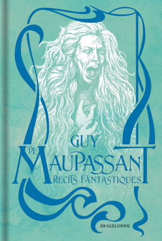
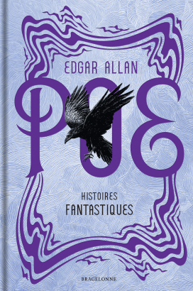
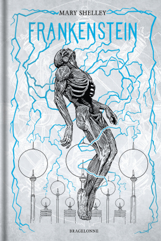
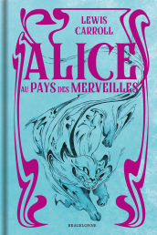
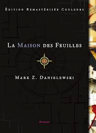
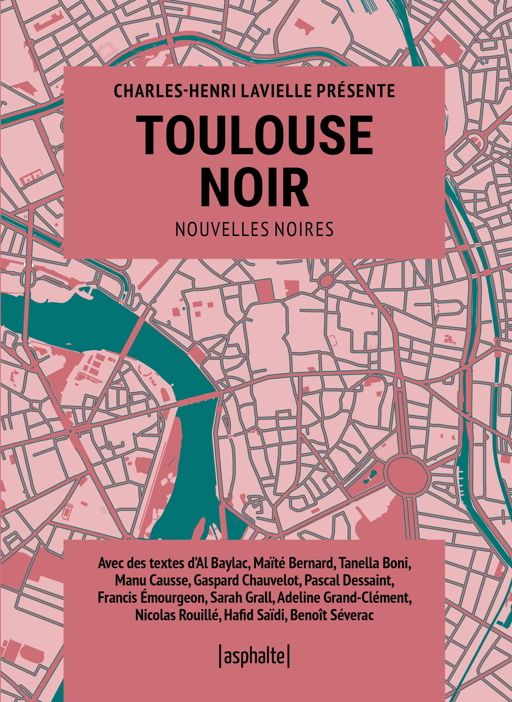
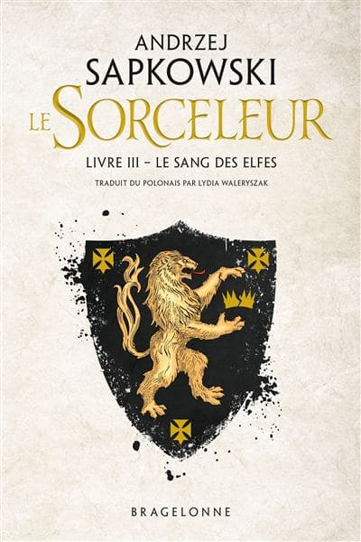

I've always enjoyed spending time reading.
I particularly enjoy fantasy, science-fiction and mystery books.
Books I'm reading

Récits Fantastiques
Books backlog

Histoires Fantastiques

Frankenstein

Alice in Wonderlands

The House of Leaves

Toulouse Noir
Books I've read
Dracula

The Witcher Tome 3